Background
Employees use the service portal to raise an incident or request a service. The experience was frustrating, and it was split across two separate tools. Our goal was to understand those frustrations and design a portal that fits what employees actually need.
Service catalogue
An information portal that directs users to the right pages based on their needs.
Employee portal
The technical offer, where users raise incidents and request services.
One service portal
A single place to find information, raise incidents and request services.
Discover
Three research methods, from business goals to real user behaviour.
Stakeholder interviews
We interviewed stakeholders to build a shared understanding of the problem, the business context and their expectations. We explored three areas:
Problem understanding
“What problem are you trying to solve?”
Industry context
“Has anyone in the industry worked on this before?”
Business outcomes
“What does success look like for the business?”
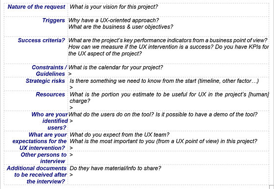
Survey
A survey gathered insights from a diverse set of employees across geographies and roles.
- Information is hard to find: “The IT services catalog is a labyrinthine ordeal!”
- Lack of user centricity: too many steps and technical terms for a simple request
- Search needs improving: searches rarely land on the right article
- Information quality: content written for experts, not always translated
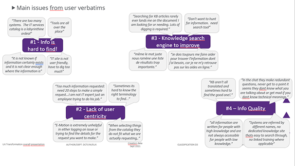
Usability testing
We tested the existing tool with real users to find usability gaps and see how people actually behave. We recruited 15 users across three levels of usage, from several countries, covering business, functional support and IT profiles.
Task example: view my incidents
We analysed each task across three themes: findability, visual design and navigation, tracking each user's route and time. For this task, users split across two different routes, and one user could not find their incidents.
Completion took between 3 and 19 seconds.
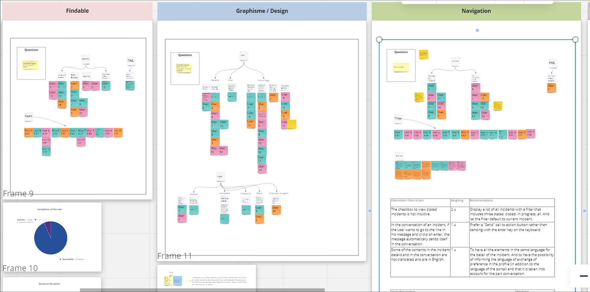
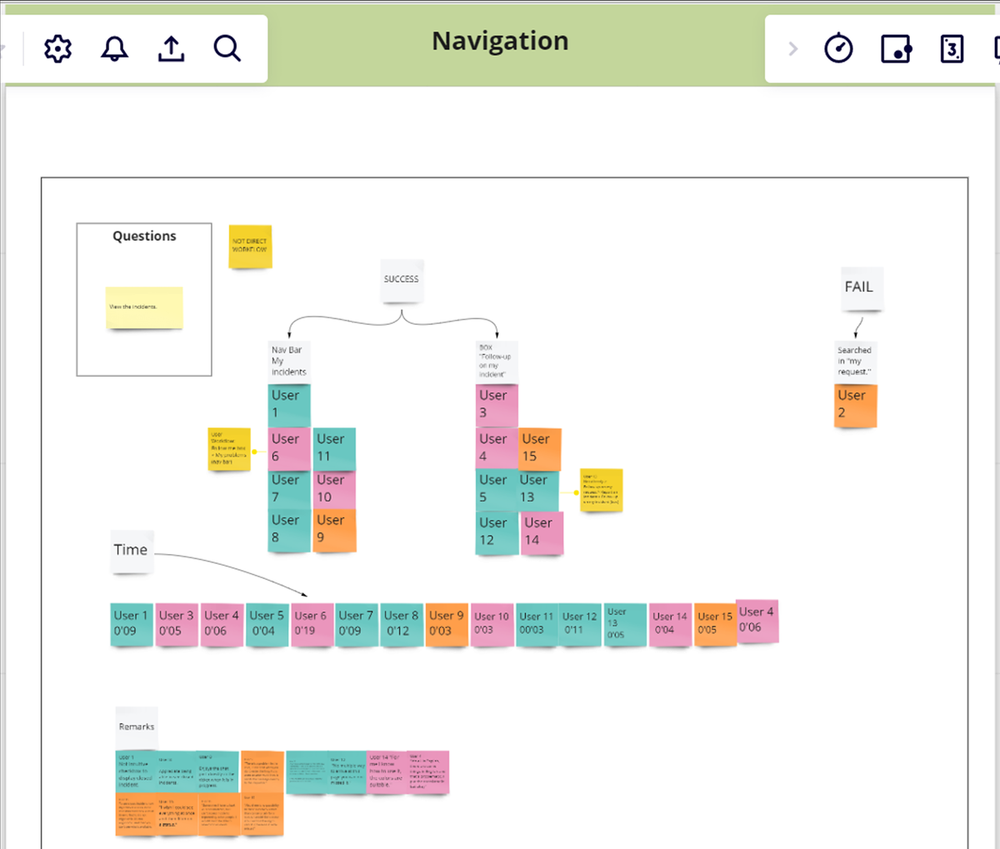
Three routes to one form
When asked to report a laptop issue, users took three different paths. One path even ended in an empty form. The portal offered too many overlapping entry points.
Usability testing synthesis
We logged every observation with a weighting (how many users raised it) and a recommendation.
| Pain point | Users | Recommendation |
|---|---|---|
| The checkbox to view closed incidents is not intuitive. | 2 | Show all incidents with a filter for closed, in progress and all, defaulting to current incidents. |
| Pressing Enter to add a new line in an incident conversation sends the message. | 1 | Send with a clear “Send” button instead of the Enter key. |
| Some incident details and conversation content are not translated and appear in English. | 1 | Show all incident details in one language, and let users set a preferred language for conversations in their profile. |
What users asked for
- Search incidents reported by other users
- Close a ticket themselves, without cancelling it
- See whether an incident was closed on time or late
- Rate the resolution directly on the incident page
What users liked
- Seeing their closed incidents
- Chatting directly inside an open incident
Define
Making sense of the research together, and deciding what matters most.
Co-creation workshop
We ran co-creation workshops with cross-functional stakeholders and users to explore solutions together and bring different perspectives into the design.
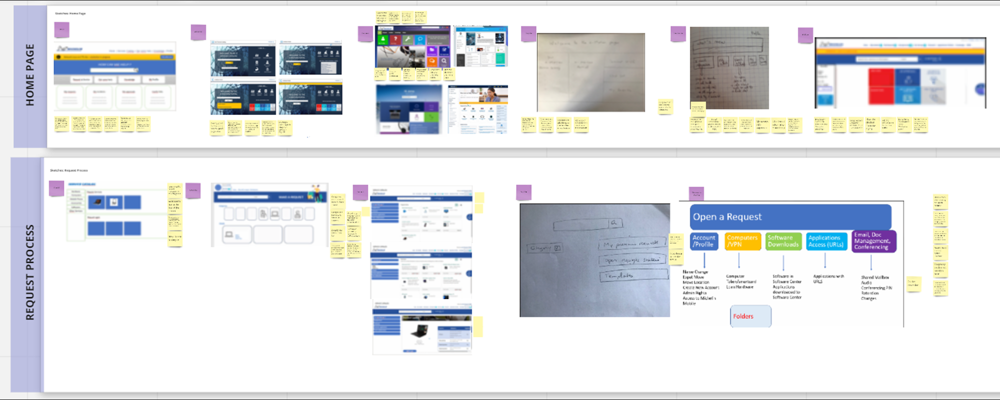
Information sorting & prioritisation
To bring clarity to the problem space, we synthesised the findings into meaningful structures that defined where design should focus.
Information sorting with stakeholders
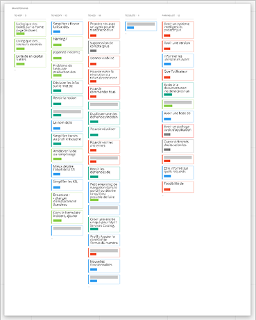
Prioritisation
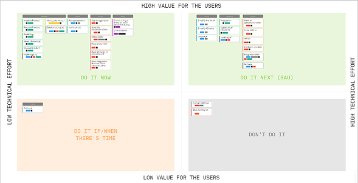
Synthesis with swim lanes
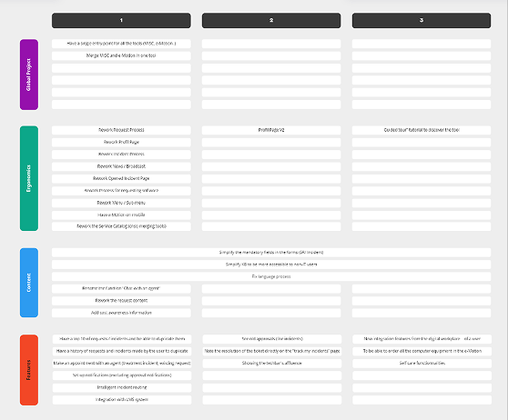
Develop
From wireframes to a brand and visual language built from scratch.
Wireframes
I created wireframes in iterations using Balsamiq, and validated each round with the requester, the technical team and user representatives.
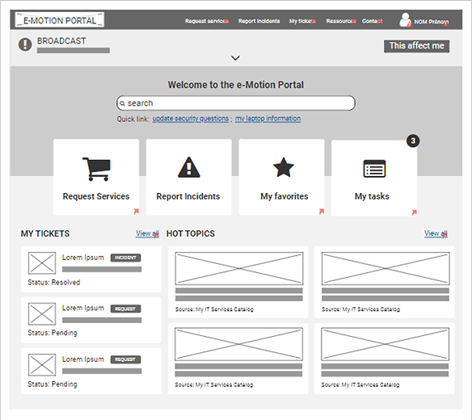
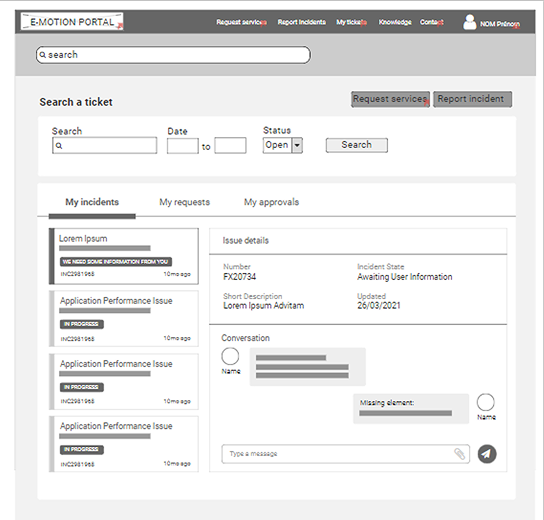
Balsamiq wireframes, validated with stakeholders
Visual design
We created brand guidelines from scratch. Members from multiple teams helped define the brand and styles, so the result had shared ownership.
Designs were also checked for accessibility and technical feasibility, and tested with users.
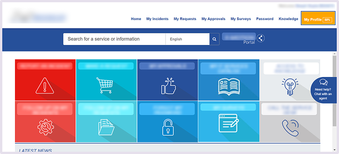
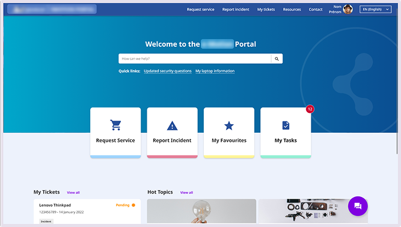
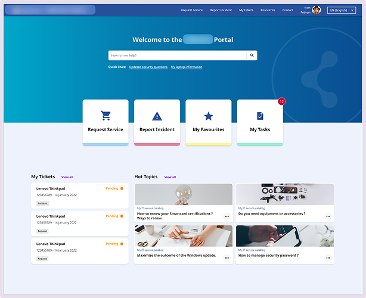
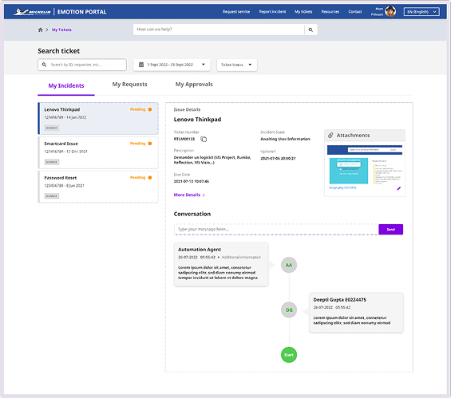
Final designs
Deliver
Handing over everything the team needed to build and grow the portal.
Design assets
Final screens and assets for the new portal, ready for development.
Component library
A reusable library built on the new brand guidelines, so future pages stay consistent.